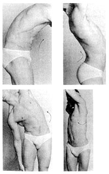

Tudo sobre a coluna vertebral.

O atlas e o áxis permitem os movimentos da cabeça, que são de três tipos: flexão e extensão, inclinação lateral e rotação.
Os movimentos de flexão e extensão são feitos através da articulação occipito-atloideia, segundo um eixo que passa pelo centro da curvatura dos dois côndilos do occipital. Estes movimentos podem ser também feitos através das articulações atlóido-axoideias, mas de modo muito limitado.
Os movimentos de flexão da coluna vertebral tendem a diminuir as curvaturas sagitais cervical e lombar, acentuando um pouco a curvatura dorsal.
Os movimentos de extensão da coluna vertebral são muito nítidos ao nível das colunas cervical e lombar, exagerando assim as curvaturas sagitais normais.
Os movimentos de inclinação lateral são executados através da articulação occipito-atloideia, mas segundo um eixo mediano ântero-posterior que passa pelo centro da curvatura transversal dos dois côndilos do occipital. Estes movimentos podem também ser feitos através das articulações atlóido-axoideias, mas muito limitadamente.
Os movimentos de inclinação lateral da coluna vertebral são reduzidos ao nível da coluna lombar, aumentando de amplitude nas colunas dorsal e cervical.
Os movimentos de rotação têm origem nas articulações atlóido-odontoideia e atlóido-axoideias, através de um eixo vertical que passa pelo dente do áxis.
Os movimentos de rotação da coluna vertebral são muito pouco evidentes ao nível das colunas lombares e dorsal, mas muito desenvolvidos na coluna cervical.